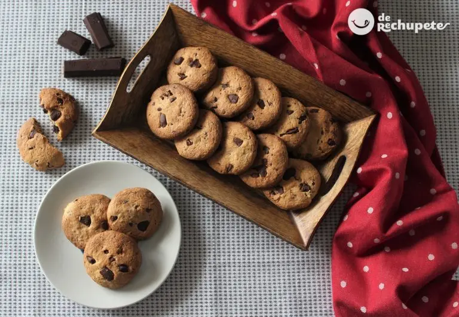

CookiePedia
Que son las galletas
La galleta (del francés galette) es una
preparación culinaria de pequeño tamaño,
dulce o salada, horneada y hecha normalmente a base de harina de trigo, huevos, azúcar, mantequilla
oaceites
vegetales o grasas animales. Puede incluir más ingredientes como otros cereales, pasas, frutos
secos,chocolate,
saborizantes como la vainilla, el amaranto y el coco entre muchos otros. Pertenece a la repostería.
La palabra galleta viene de la palabra francesa galette. En Francia la galette es un pastel redondo
o fino o un crepe hecho con trigo sarraceno. Galette proviene de galet, que significa literalmente
"guijarro" y es el diminutivo de gal (piedra). Gal es una palabra que proviene de las lenguas
indoeuropeas,
concretamente de la voz cal, que significaba "piedra". En francés, aquel pastel recibió el nombre de
galette
(diminutivo de galet) por su forma redonda.

Ingredientes
En la actualidad existe una gran variedad de galletas que difieren entre sí
tanto en sus ingredientes, como en su proceso de cocción y en los instrumentos de corte y moldeo
utilizados, incluso el modo de preparación
Los ingredientes más habituales son la harina de trigo blando, azúcar, sal, huevos, mantequilla,
lecitina, antiaglutinante, bicarbonato sódico y agua.2 Sin embargo, las galletas ultraprocesadas de
origen industrial suelen llevar aceites vegetales en lugar de huevos o mantequilla.3
Para algunas galletas es preciso que haya un cierto desarrollo del gluten, mientras que para las que se
desee que sean fácilmente desmenuzables y prácticamente sin elasticidad no hace falta desarrollar más
gluten. El alto contenido en azúcares, el bajo contenido en agua y el PH4 alto (debido al bicarbonato)
dificultan la formación de gluten.2 Los esponjantes (bicarbonato sódico y amónimo, diversos
fosfatos...) se utilizan para proporcionar un mayor volumen al producto. Tras homogeneizar la mezcla,
darle forma y hornearla el contenido de agua de las galletas está entre el 2 y el 5%.

Influencia sobre la salud
El consumo excesivo de galletas, debido a su alto contenido en azúcar, harinas refinadas y aceites vegetales industriales y a que se trata de un alimento hiperpalatable y poco saciante (sobre todo si son ultraprocesadas), puede provocar obesidad, diabetes y otras enfermedades.